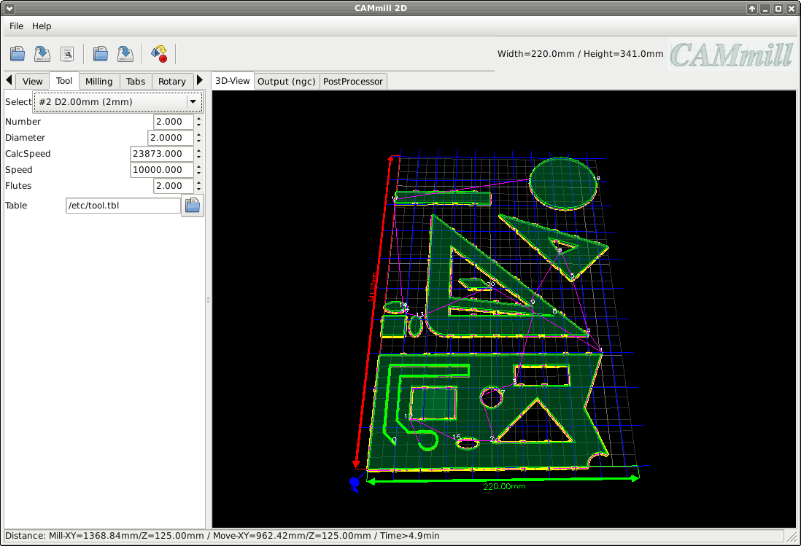

Tool
Rotaymode is used to mill on round materials via a 4th axis (rotary axis).
Select:
Selection of a tool from the tooltabe (FREE means you can freely enter the parameters).
Tool:
Number of the tool (for the CNC software / tool changer).
Diameter:
Tool diameter (to calculate the offset).
CalcSpeed:
Calculated / suggested tool speed (revolutions per minute / calculated from material type and tool data).
Speed:
Tool speed (revolutions per minute).
Flutes:
Number of cutting edges of the tool (optional for calculating the maximum feed and the speed of the tool).
Table:
Path to the tool table (in LinuxCNC format / optional).